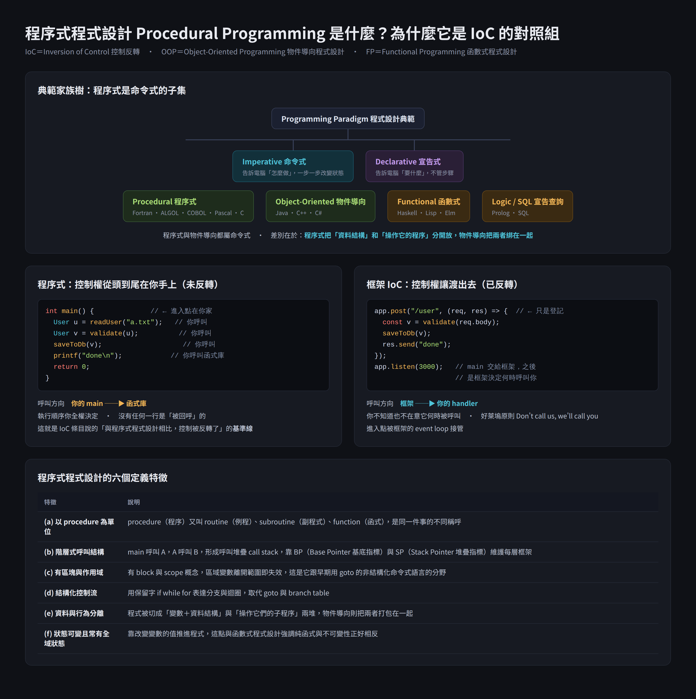

程序式程式設計 Procedural Programming：IoC 的對照基準線
程序式程式設計是命令式程式設計的一種，把程式拆成一個個可重用的 procedure（程序）， 由你的程式碼主動、依序地呼叫它們，控制權從頭到尾不離開你的手。 它在 IoC 條目裡被拿來當對照組，正因為它是「控制權完全沒有反轉」的最乾淨範例。

我原本的兩個問題
- 那如果我說是 AngularJS 也符合這邊的敘述嗎
- 把 IoC 條目翻成中文之後問：what is procedural programming
一、程序式程式設計的定義拆解
(a) procedure 有四個同義詞
procedure（程序）＝ routine 例程 ＝ subroutine 副程式 ＝ function 函式。 看到 subroutine 不用緊張，就是函式。
(b) 它是命令式 imperative 的子集合
- 命令式 imperative：告訴電腦「怎麼做」，靠一步步改變狀態推進程式。
- 程序式 procedural：命令式之下的一支，額外要求用 procedure 組織程式。
- 所以關係是 imperative ⊃ procedural，不是並列。
(c) 與「非結構化命令式」的分野是 block 與 scope
早期非結構化命令式語言用 goto 與 branch table 跳來跳去。程序式語言引入
block 區塊 與 scope 作用域，區域變數離開範圍就失效，控制流改用保留字
if while for 表達，這是結構化程式設計運動的成果。
(d) 階層式呼叫結構就是呼叫堆疊
main 呼叫 A，A 呼叫 B，執行期表現為 call stack 呼叫堆疊。每進入一層 procedure 就推一個
stack frame 堆疊框架，由 BP（Base Pointer，基底指標） 標示這層的底、
SP（Stack Pointer，堆疊指標） 標示目前堆疊頂端。
這是「你呼叫別人」在硬體層的實體證據：呼叫出去一定會 return 回來。
(e) 資料與行為分離，這是與 OOP 最硬的差別
| 面向 | 程序式 Procedural | 物件導向 OOP |
|---|---|---|
| 程式被切成 | 變數＋資料結構，以及操作它們的子程序，兩堆分開 | 物件，資料與方法綁在一起 |
| 誰持有行為 | 獨立的函式，資料只是被傳進去的參數 | 物件自己 |
| 典型寫法 | saveUser(user) | user.save() |
一句話記：程序式是「函式操作資料結構」，OOP 是「把兩者打包成一包」。
(f) 狀態可變，常見全域狀態
程序式靠改變變數的值推進程式，這點與 FP 強調純函式與不可變性正好相反，雖然兩者都源自結構化程式設計。
(g) 代表語言與年代
| 年代 | 語言 |
|---|---|
| 1957–1964 | Fortran、ALGOL、COBOL、PL/I、BASIC |
| 1970–1972 | Pascal、C |
(h) 為什麼 IoC 條目要拿它當對照
- 程序式寫法中，你的客製程式碼呼叫可重用的函式庫處理大部分任務，控制流由你主導。
- 有了框架以後，外部的框架程式碼在控制流程，回頭呼叫你寫的程式碼。
- 相對於第 1 條這條基準線，第 2 條的控制流方向被翻過來了，所以叫 inversion。
所以 inversion 這個字是歷史性的、相對性的，不是說控制流本身倒著跑， 而是相對於程序式那個年代的預設寫法，方向翻過來了。你原本的理解完全正確。
(i) 小修正：是 design principle 不是 design rule
原文用的是 design principle，中文慣譯設計原則而非設計規則。principle 是指導方針，rule 是硬性規定，IoC 屬前者。
二、AngularJS 1.x 算不算框架？算，而且是教科書等級

(j) 六項證據逐條對照
| 框架特徵 | AngularJS 1.x 的具體實作 | 成立與否 |
|---|---|---|
| 控制反轉 IoC | 你寫 controller、directive、service 只是註冊，框架在 bootstrap 與 digest 時回頭呼叫你 | 成立 |
| 依賴注入 DI | 內建 $injector，函式參數名寫 $http $scope，框架自己建好物件塞進來 | 成立，最經典的範例 |
| 誰擁有進入點 main | ng-app 或 angular.bootstrap() 啟動整個 app，你沒寫 main | 成立 |
| 生命週期只能在指定時機介入 | $watch $digest $apply link compile，全是框架開的洞 | 成立 |
| 慣例優於設定 | module、controller、service、factory、provider、filter、directive 七種角色是強制分類 | 成立 |
| 核心不可改只能擴充 | 你不改 angular.js，只透過 provider 與 decorator 擴充 | 成立 |
(k) AngularJS 比 React 更「框架」的關鍵一點
React 官方自稱 library，因為它只管 view 層的 render。AngularJS 1.x 一次包了路由 ngRoute、
HTTP $http、DI 容器 $injector、樣板引擎、表單驗證、雙向綁定，
是一整條產品線，所以它在光譜上比 React 更靠近框架那一端。
(l) 雙向綁定是控制反轉最直觀的體感
- jQuery 時代：資料變了，你要自己寫一行把新值塞回 DOM。
- AngularJS：資料變了，
$digest循環自己偵測到並更新畫面，你什麼都不用寫。 - 「你什麼都不用寫，它自己會做」就是控制權已經交出去的證據。
(m) AngularJS 與 Angular 2+ 是兩個東西
| 項目 | AngularJS | Angular |
|---|---|---|
| 版本 | 1.x | 2 以上 |
| 語言 | JavaScript | TypeScript |
| 架構 | $scope 與 digest 循環 | 元件樹與 Zone.js 變更偵測 |
| 兩者關係 | 不相容，是重寫不是升級。講「AngularJS」專指 1.x，講「Angular」專指 2+ | |
面試講錯這一點會被抓，所以一定要說清楚講的是哪一個。
(n) 生命週期狀態：AngularJS 已停止官方支援
- 2010 年由 Google 發布。
- 1.8 是唯一的 LTS（Long Term Support，長期支援）版本，2020-06-04 發布。
- 最後一個版本 1.8.3，2022-04-07 釋出。
- 官方支援已於 2021-12-31 結束，之後只剩 HeroDevs 與 OpenLogic 的商業延長支援。
(o) 面試一句話版本
$injector 做依賴注入，
所以它是教科書等級的框架，不是函式庫。
三、程式碼範例
同資料夾的 程序式程式設計-demo.js 可直接 node 程序式程式設計-demo.js 執行，看輸出順序就懂控制權在誰手上。核心對照：
// 程序式：main 在你手上，順序你決定
function main() {
const u = readUser('Abby'); // 你呼叫
const v = validate(u); // 你呼叫
saveToDb(v); // 你呼叫
}
main();
// IoC：你只是登記，何時執行由框架決定
miniFramework.on('init', (ctx) => console.log('init 被呼叫'));
miniFramework.on('render', (ctx) => console.log('render 被呼叫'));
miniFramework.run(); // 這一行之後 main 就不是你的了
四、是非題
五、申論題
inversion 之所以是歷史性的，是因為它描述的是相對關係而非絕對現象：控制流本身沒有倒著跑， 是相對於程序式那個年代的預設方向翻了過來。如果一開始大家就用框架寫程式，這件事根本不會被命名為「反轉」。 補充一點用詞：原文是 design principle 設計原則，屬指導方針，不是硬性規定。
1. 進入點不在我手上：
ng-app 或 angular.bootstrap() 啟動整個 app，我從沒寫過 main。2. 我寫的只是註冊：controller、directive、service 都是登記給框架，何時被呼叫由 bootstrap 與 digest 循環決定， 典型的好萊塢原則 Don't call us, we'll call you。
3. 依賴由框架注入：內建
$injector，我只要在函式參數寫 $http $scope，
物件就由框架建好塞進來，我不負責 new。可以再補一句差異化的話：AngularJS 1.x 與 Angular 2+ 是兩個不相容的東西，而且 AngularJS 官方支援已在 2021-12-31 結束， 現在多半是維護舊系統或評估遷移的情境。
例子：同樣要存一個使用者，程序式寫
saveUser(user)，資料只是被傳進去的參數，函式住在別的地方；
OOP 寫 user.save()，行為就掛在資料自己身上。這個差別會直接影響維護成本：程序式改一個資料結構要追遍所有操作它的函式，OOP 的封裝就是在買這個維護紅利。
六、相關筆記與關聯理由
- 框架-vs-函式庫-控制反轉IoC：本篇是那一篇 (c) 控制反轉小節的深挖版。那篇給判準，這篇補上「被拿來對照的另一端到底是什麼」，兩篇合起來才完整。
- 可維運性-Maintainability：程序式的 (e) 資料與行為分離，正是大型專案難維護的來源之一，因為改一個資料結構要追遍所有操作它的函式。
- JS-相等性與傳值傳址：本篇 (d) 的呼叫堆疊與 stack frame，正是理解 JavaScript 傳值傳址時「參數到底被複製了什麼」的底層機制，講的是同一個 call stack。
- 面試題庫與自我介紹優化-AI原生工程師模擬：(o) 的一句話版本可直接收進回答庫，屬架構觀念題。
七、資料來源（含查證時間）
| 主題 | 連結 | 時間 |
|---|---|---|
| Procedural programming 定義與典範關係 | en.wikipedia.org/wiki/Procedural_programming | 查證日 2026-08-08 |
| Imperative programming 條目 | en.wikipedia.org/wiki/Imperative_programming | 查證日 2026-08-08 |
| Inversion of Control 定義與 inversion 的歷史性說明 | en.wikipedia.org/wiki/Inversion_of_control | 查證日 2026-08-06 |
| AngularJS EOL 與 LTS 日期、最後版本 1.8.3 | endoflife.date/angularjs | 查證日 2026-08-08 |
| AngularJS LTS 結束新聞 | infoq.com/news/2022/01/angularjs-lts-end | 2022-01 |